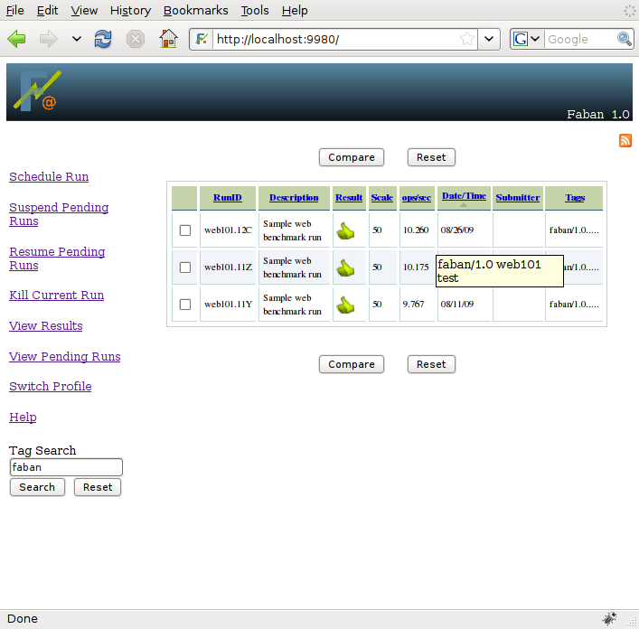

You have already seen many examples of tagging. Here we will see how we use them to find our runs. But first, lets discuss Faban's tagging system.
The basis of of Faban's tagging system is just the same as most tagging systems on many photo or video sharing sites as well as social networking sites. It is common to tag a result by the software and hardware components that were used for the experiment. But you may also use totally different tags that are meaningful to you. One special property for hardware and software componenets is that they mostly have some way of versioning. We also want to keep track of such versioning in our tagging system so we may later compare results based on different software versions, for instance.
The version tagging system allows you to add versions to the tag by
separating them by the slash (/) character. For example, we could use
tags such as ApacheTM/2/2.2 or MySQLTM/5.1.
As you search for Apache, all
results tagged with Apache no mattter which version will show up. A
search for Apache/2 will show all the results pertaining to the
Apache/2 tag, whether the minor version is 2.0, 2.1, or 2.2, etc. If
the tag has no version information, it would not make sense to come up
with artificial versions, or hierarchies. For instance, the tag
Linux/MySQL does not make sense as these two entities are orthogonal.
They should use separate tags.
If you want to search
for any particular
runs associated with the tags, you can do so by entering the tags in
the tag search field. Tag search is of 3 forms,
|
|
Style |
Example |
|---|---|---|
| Single tag | MySQL | |
| Version tags | MySQL/5.2 | |
| Any combination of the
above |
MySQL/5.2 Linux |
